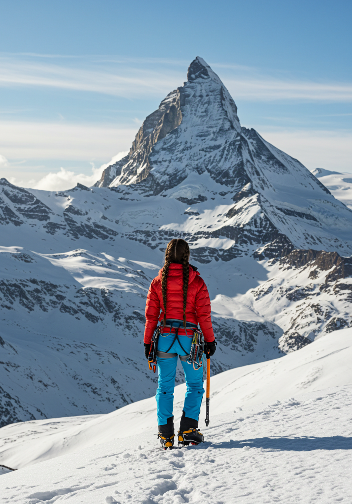

Attrezzatura da montagna
Scopri l'attrezzatura necessaria per affrontare le escursioni e le ascensioni in montagna.
Gli scarponi da montagna

Gli scarponi sono fondamentali per affrontare i sentieri di montagna. Devono garantire una buona aderenza al terreno, protezione del piede e comfort durante la camminata.
La piccozza da alpinismo

La piccozza è uno strumento utilizzato durante le ascensioni su neve e ghiaccio. Può essere impiegata per mantenere l'equilibrio e, con le tecniche appropriate, per arrestare una scivolata.
Fotografia bonus
Vuoi scoprire un altro elemento dell'attrezzatura da alpinismo? Premi il pulsante!